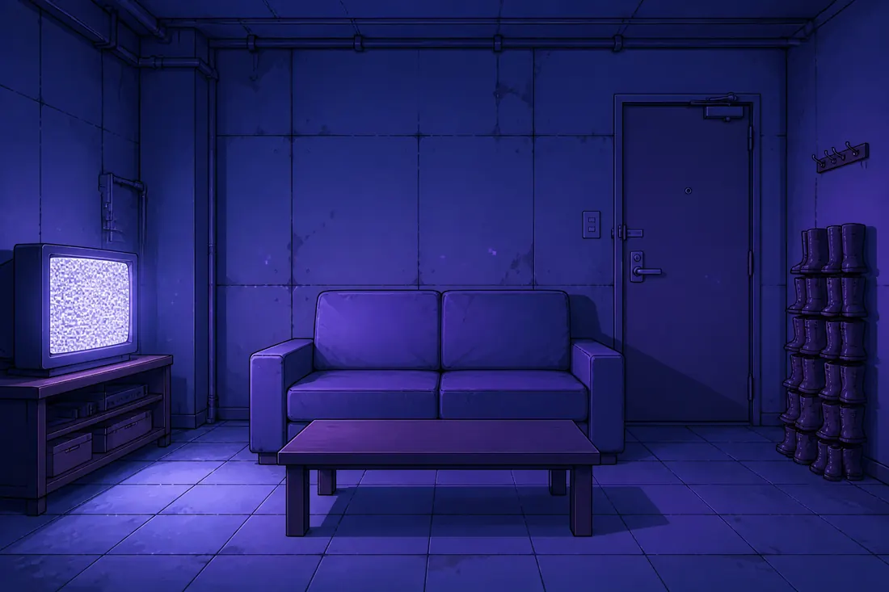

格莉奇與黑洞先生
全 七 章 ・ 殺 青
原作・劇本
林亞澤七章，二十二萬字的第一千零四版
視覺・立繪・場景
AI 生成＋人工修版去背、表情差分、站位校正
配音・全書 699 句
CosyVoice3本機自架，逐句試聽定案
MiniMaxLarch 平台提供
登 場 人 物
場 景
直播間・錄音間・客廳・茶几諾亞的店・斑比的工作室・十四樓會客室
配 樂
Suno四首都是生成的，逐首試聽選進來
Felt and Silence茶几・她寫本子的地方
Warm Static客廳的夜・錄音間
Static in the Static諾亞的店
Felt and Hiss早晨的廚房
平 台
Larchlarch.yapiflow.com 視覺小說創作平台
謝謝站方把這個工具做出來，
也謝謝在上面創作的每一個人。
也 一 併 感 謝
感謝那台飲水機，一秒一滴，從沒有停過
感謝第七行，空著等了一千零四天
感謝所有唸錯的字，你們讓我們學會了替身
製作過程沒有任何記憶體受損
但有幾句台詞英勇犧牲

● 全體卡司B-ROLL
殺青這天，沙發上還是黑的
致
每一個願意
被別人記住一點點的人
我會記得你一點點。
—— 敬 每一位回來的讀者